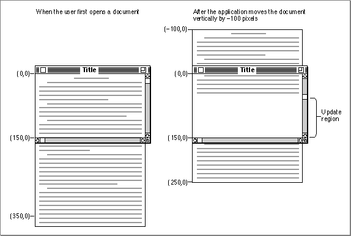
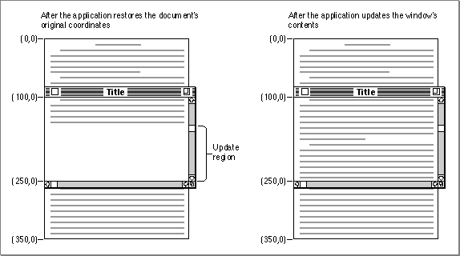
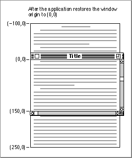
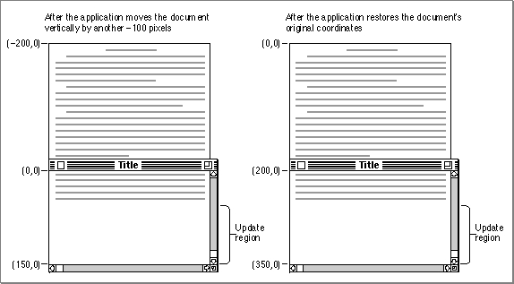
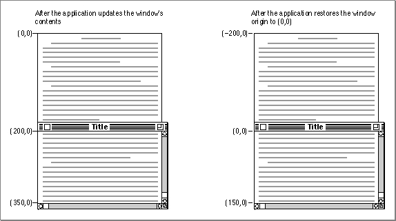

Legacy Document
Important: The information in this document is obsolete and should not be used for new development.
Important: The information in this document is obsolete and should not be used for new development.


Scrolling Through a Document
Earlier sections of this chapter explain how to create scroll bars, determine when a mouse-down event occurs in a scroll bar, track user actions in a scroll bar, and determine and change scroll bar settings. This section discusses how your application actually scrolls through documents in response to users' mouse activity in the scroll bars. For example, your application scrolls toward the bottom of the document under the following conditions:
As a first step, your application must determine the distance by which to scroll. When the user drags a scroll box to a new location on the scroll bar, you scroll a corresponding distance to a new location in the document.
- When the user drags the scroll box to the bottom of the vertical scroll bar, your application should display the end of the user's document.
- When the user clicks the gray area below the scroll box, your application should move the document up to display the next window of information toward the bottom of the document, and it should use
SetControlValueto move the scroll box.- When the user clicks the down scroll arrow, your application should move the document up by one line (or by some similar measure) and bring more of the bottom of the document into view, and it should use
SetControlValueto move the
scroll box.
When the user clicks a scroll arrow, your application determines an appropriate amount to scroll. In general, a word processor scrolls vertically by one line of text and horizon- tally by the average character width, and a database or spreadsheet scrolls by one field. Graphics applications should scroll to display an entire object when possible. (Typically, applications convert these distances to pixels when using Control Manager, QuickDraw, and TextEdit routines.)
When the user clicks a gray area of a scroll bar, your application should scroll by a distance of just less than the height or width of the window. To determine this height and width, you can use the
contrlOwnerfield of the scroll bar's control record. This field contains a pointer to the window record. When you scroll by a distance of one window, it is best to retain part of the previous window. This retained portion helps the user place the material in context. For example, if the user scrolls down by a distance of one window in a text document, the line at the top of the window should be the one that previously appeared at the bottom of the window.The scrolling direction is determined by whether the scrolling distance is expressed as a positive or negative number. When the user scrolls down or to the right, the scrolling distance is a negative number; when the user scrolls up or to the left, the scrolling distance is a positive number. For example, when the user scrolls from the beginning of a document to a line located 200 pixels down, the scrolling distance is -200 pixels on the vertical scroll bar. When the user scrolls from there back to the start of the document, the scrolling distance is 200 pixels.
Determining the scrolling distance is only the first step. In brief, your application should take the following steps to scroll through a document in response to the user's manipulation of a scroll bar.
These steps are explained in greater detail in the rest of this section.
- Use the
FindControl,GetControlValue, andTrackControlfunctions to help calculate the scrolling distance.- If you are scrolling for any reason other than the user dragging the scroll box, use the
SetControlValueprocedure to move the scroll box a corresponding amount.- Use a routine--such as the QuickDraw procedure
ScrollRector the TextEdit procedureTEPinScroll--to move the bits displayed in the window by the calculated scrolling distance. Then either use a call that generates an update event
or else directly call your application'sDoUpdateroutine, which should perform
the rest of these steps.- Use the
UpdateControlsprocedure to update the scroll bars and then call the Window Manager procedureDrawGrowIconto redraw the size box.- Use the QuickDraw procedure
SetOriginto change the window origin by an amount equal to the scroll bar settings so that the upper-left corner of the document lies at (0,0) in the window's local coordinate system. (You perform this step so that your application's document-drawing routines can draw in the correct area of the window.)- Call your application's routines for redrawing the document inside the window.
- Use the
SetOriginprocedure to reset the window origin to (0,0) so that future Window Manager and Control Manager routines draw in the correct area of the window.- Return to your event loop.
When the user saves a document, your application should store the data in your own application-defined data structures. (For example, the sample code in this chapter
- Note
- It is not necessary to use
SetOriginas described in the rest of this chapter. This procedure merely helps you to offset the window origin
by the scroll bars' current settings when you update the window, so
that you can locate objects in a document using a coordinate system where the upper-left corner of the document is always at (0,0). As an alternative to this approach, your application can leave the upper-left corner of the window (called the window origin) located at (0,0) and instead offset the items in your document by an amount equal to the scroll bars' settings. The QuickDraw proceduresOffsetRect,OffsetRgn,SubPt, andAddPt, which are described in Inside Macintosh: Imaging, are useful if you pursue this alternate approach.
stores a handle to a TextEdit edit record in a document record. The edit record contains information about the text, such as it length and its own local coordinate system, and
a handle to the text itself.) You typically store information about the objects your application displays onscreen by using coordinates local to the document, where the upper-left corner of the document is located at (0,0).The left side of Figure 5-16 on the next page illustrates a case in which the user has just opened an existing document, and the SurfWriter sample application displays the top of the document. In this example, the document consists of 35 lines of monostyled text, and the line height throughout is 10 pixels. Therefore, the document is 350 pixels long. When the user first opens the document, the window origin is identical to the upper-left point of the document's space: both are at (0,0).
In this example, the window displays 15 lines of text, which amount to 150 pixels. Hence, the maximum setting for the scroll bar is 200 because the vertical scroll bar's maximum setting is the length of the document minus the height of its window.
Imagine that the user drags the scroll box halfway down the vertical scroll bar. Because the user wishes to scroll down, the SurfWriter application must move the text of the document up so that more of the bottom of the document shows. Moving a document up in response to a user request to scroll down requires a scrolling distance with a negative value. (Likewise, moving a document down in response to a user request to scroll up requires a scrolling distance with a positive value.)
Using
FindControl,TrackControl, andGetControlValue, the SurfWriter application determines that it must move the document up by 100 pixels--that is,
by a scrolling distance of -100 pixels. (UsingFindControl,TrackControl, andGetControlValueto determine the scrolling distance is explained in detail in "Scrolling in Response to Events in the Scroll Box" beginning on page 5-48.)Figure 5-16 Moving a document relative to its window

The SurfWriter application then uses the QuickDraw procedure
ScrollRectto shift
the bits displayed in the window by a distance of -100 pixels. TheScrollRectprocedure moves the document upward by 100 pixels (that is, by 10 lines); 5 lines from the bottom of the previous window display now appear at the top of the window,
and the SurfWriter application adds the rest of the window to an update region for
later updating.The
ScrollRectprocedure doesn't change the coordinate system of the window; instead it moves the bits in the window to new coordinates that are still in the window's local coordinate system. For purposes of updating the window, you can think of this
as changing the coordinates of the entire document, as illustrated in the right side of Figure 5-16.The
ScrollRectprocedure takes four parameters: a rectangle to scroll, a horizontal distance to scroll, a vertical distance to scroll, and a region handle. Typically, when specifying the rectangle to scroll, your application passes a value representing the content region minus the scroll bar regions, as shown in Listing 5-17.Listing 5-17 Using
ScrollRectto scroll the bits displayed in the window
PROCEDURE DoGraphicsScroll (window: WindowPtr; hDistance, vDistance: Integer); VAR myScrollRect: Rect; updateRegion: RgnHandle; BEGIN {initially, use the window's portRect as the rectangle to scroll} myScrollRect := window^.portRect; {subtract vertical and horizontal scroll bars from rectangle} myScrollRect.right := myScrollRect.right - 15; myScrollRect.bottom := myScrollRect.bottom - 15; updateRegion := NewRgn; {always initialize the update region} ScrollRect(myScrollRect, hDistance, vDistance, updateRegion); InvalRgn(updateRegion); DisposeRgn(updateRegion); END; {of DoGraphicsScroll}Although each scroll bar is 16 pixels along its shorter dimension, the
- IMPORTANT
- You must first pass a horizontal distance as a parameter to
ScrollRectand then pass a vertical distance. Notice that when you specify a point in the QuickDraw coordinate system, the opposite is true: you name the vertical coordinate first and the horizontal coordinate second.
DoGraphicsScrollprocedure shown in Listing 5-17 subtracts only 15 pixels
because the edge of the scroll bar overlaps the edge of the window frame, leaving
only 15 pixels of the scroll bar in the content region of the window.The bits that
ScrollRectshifts outside of the rectangle specified bymyScrollRectare not drawn on the screen, and they are not saved--it is your application's responsibility to keep track of this data.The
ScrollRectprocedure shifts the bits a distance ofhDistancepixels horizontally andvDistancepixels vertically; whenDoGraphicsScrollpasses positive values in these parameters,ScrollRectshifts the bits in themyScrollRectparameter to the right and down, respectively. This is appropriate when the user intends to scroll left or up, because when the SurfWriter application finishes updating the window, the user sees more of the left and top of the document, respectively. (Remember: to scroll up or left, move the document down or right, both of which are in the positive direction.)When
DoGraphicsScrollpasses negative values in these parameters,ScrollRectshifts the bits in themyScrollRectparameter to the left or up. This is appropriate when the user intends to scroll right or down, because when the SurfWriter application finishes updating the window, the user sees more of the right and the bottom of the document. (Remember: to scroll down or right, move the document up or left, both of which are in the negative direction.)In Figure 5-16, the SurfWriter application determines a vertical scrolling distance of -100, which it passes in the
vDistanceparameter as shown here:
ScrollRect(myScrollRect, 0, -100, updateRegion);If, however, the user were to move the scroll box back to the beginning of the document at this point, the SurfWriter application would determine that it has a distance of
100 pixels to scroll up, and it would therefore pass a positive value of 100 in thevDistanceparameter.After using
ScrollRectto move the bits that already exist in the window, the SurfWriter application should draw the bits in the update region of the window by using its standard window-updating code.As previously explained,
ScrollRectin effect changes the coordinates of the document relative to the local coordinates of the window. In terms of the window's local coordinate system, the upper-left corner of the document is now at (-100, 0), as shown on the right side of Figure 5-16. To facilitate updating the window, the SurfWriter application uses the QuickDraw procedureSetOriginto change the local coordinate system of the window so that the SurfWriter application can treat the upper-left corner of the document as again lying at (0,0).The
SetOriginprocedure takes two parameters: the first is a new horizontal coordinate for the window origin, and the second is a new vertical coordinate for the window origin.
Any time you are ready to update a window (such as after scrolling it), you can use
- IMPORTANT
- Like
ScrollRect,SetOriginrequires you to pass a horizontal coordinate and then a vertical coordinate. Notice that when you
specify a point in the QuickDraw coordinate system, the opposite
is true: you name the vertical coordinate first and the horizontal coordinate second.GetControlValueto determine the current setting of the horizontal scroll bar and
pass this value as the new horizontal coordinate for the window origin. Then useGetControlValueto determine the current setting of the vertical scroll bar and pass this value as the new vertical coordinate for the window origin. UsingSetOriginin this fashion shifts the window's local coordinate system so that the upper-left corner of the document is always at (0,0) when you redraw the document within its window.For example, after the user manipulates the vertical scroll bar to move (either up or down) to a location 100 pixels from the top of the document, the SurfWriter application makes the following call:
SetOrigin(0, 100);Although the scrolling distance was -100, which is relative, the current setting for the scroll bar is now at 100. (Because you specify a point in the QuickDraw coordinate system by its vertical coordinate first and then its horizontal coordinate, the order of parameters toSetOriginmay be initially confusing.)The left side of Figure 5-17 shows how the SurfWriter application uses the
SetOriginprocedure to move the window origin to the point (100,0) so that the upper-left corner of the document is now at (0,0) in the window's local coordinate system. This restores the document's original coordinate space and makes it easier for the application to draw in the update region of the window.Figure 5-17 Updating the contents of a scrolled window

After restoring the document's original coordinates, the SurfWriter application updates the window, as shown on right side of Figure 5-17. The application draws lines 16 through 24, which it stores in its document record as beginning at (160,0) and ending
at (250,0).To review what has happened up to this point: the user has dragged the scroll box one-half of the distance down the vertical scroll bar; the SurfWriter application determines that this distance amounts to a scroll distance of -100 pixels; the SurfWriter application passes this distance to
ScrollRect, which shifts the bits in the window
100 pixels upward and creates an update region for the rest of the window; the SurfWriter application passes the vertical scroll bar's current setting (100 pixels) in a parameter toSetOriginso that the document's local coordinates are used when the update region of the window is redrawn; and, finally, the SurfWriter application draws the text in the update region of the window.However, the window origin cannot be left at (100,0); instead, the SurfWriter application must use
SetOriginto reset it to (0,0) after performing its own drawing, because the Window and Control Managers always assume the window's upper-left point is at (0,0) when they draw in a window. Figure 5-18 shows how the application usesSetOriginto set the window origin back to (0,0) at the conclusion of its window-updating routine. After the update, the application begins processing events in its event loop again.Figure 5-18 Restoring the window origin to (0,0)

The left side of Figure 5-19 illustrates what happens when the user scrolls all the way
to the end of the document--a distance of another 10 lines, or 100 pixels. After the SurfWriter application callsScrollRect, the bottom 5 lines from the previous window display appear at the top of the new window and the bottom of the window becomes
a new update region. Because the user has scrolled a total distance of 200 pixels, the application usesSetOriginto change the window origin to (200,0), as shown on the right side of Figure 5-19.The left side of Figure 5-20 shows the SurfWriter application drawing in the update region of the window; the right side of the figure shows the SurfWriter application restoring the window origin to (0,0).
Figure 5-19 Scrolling to the end of a document

Figure 5-20 Updating a window's contents and returning the window origin to (0,0)

How your application determines a scrolling distance and how it then moves the bits in the window by this distance are explained in greater detail in the next two sections, "Scrolling in Response to Events in the Scroll Box" and "Scrolling in Response to Events in Scroll Arrows and Gray Areas." "Drawing a Scrolled Document Inside a Window," which follows these two sections, describes what your application should do in its window-updating code to draw in a window that has been scrolled. You can find more detailed information about the
SetOriginandScrollRectprocedures in Inside Macintosh: Imaging.So far, this discussion has assumed that you are scrolling in response to the user's manipulation of a scroll bar. Most of the time, the user decides when and where to scroll. However, in addition to user manipulation of scroll bars, there are four cases in which your application must scroll through the document. Your application design must take these cases into account.
When designing the document-scrolling routines for your application, also try to keep the following user interface guidelines in mind:
- When your application performs an operation whose side effect is to make a new selection or move the insertion point, you should scroll to show the new selection. For example, when the user invokes a search operation, your application locates the desired text. If this text appears in a part of the document that isn't currently visible, you should scroll to show the selection. Such scrolling might also be necessary after the user invokes a paste operation. If the insertion point appears after the end of whatever was pasted, scroll until the selection and the new insertion point are visible.
- When the user enters information from the keyboard at the edge of a window, you should scroll to incorporate and display the new information. The user's focus will be on the new information, so it doesn't make sense to maintain the document's position and record the new information out of the user's view. In general, a word processor scrolls one line of text, and a database or spreadsheet scrolls one field. Graphics applications should scroll to display an entire object when possible. Otherwise, determine how quickly your application can redraw the window contents during scrolling and adjust the scrolling to minimize blinking and redrawing. Try to ensure that the scrolling is sufficiently fast so as not to annoy users but not so fast as to confuse them.
- When the user moves the cursor past the edge of the window while holding down the mouse button to make an extended selection, you should scroll the window in the direction of cursor movement. The rate of scrolling can be the same as if the user were holding down the mouse button on the corresponding scroll arrow. In some cases it makes sense to vary the scrolling speed so that it is faster as the user moves the cursor farther away from the edge of the window.
- Sometimes the user selects something, scrolls to a new location, and then tries to perform an operation on the selection. In this case, you should scroll so that the selection is showing before your application performs the operation. Showing the selection makes it clear to the user what is being changed.
- Whenever your application scrolls automatically, avoid unnecessary scrolling. Users want to control the position of documents, so your application should move a document only as much as necessary. Thus, if part of a selection is already showing in a window, don't scroll at all. One exception to this rule is when the hidden part of the selection is more important than the visible part; then scroll to show the important part. For example, suppose a user selects a large block of text and only the bottom is currently visible. If the user then types a character, your application must scroll to the location of the newly typed characters so that they are visible.
- If your application can scroll in one orientation to reveal the selection, don't scroll in both orientations. That is, if you can scroll vertically to show the selection, don't also scroll horizontally.
- When you can show context on either side of a selection, it's useful to do so. It's
also better to position a selection somewhere near the middle of a window than against a corner. When the selection is too large to fit in the window, it's helpful to display unselected information at either the beginning or the end of the selection
to provide context.
Scrolling in Response to Events in the Scroll Box
"Responding to Mouse Events in a Control" beginning on page 5-27 describes in
general how to useFindControlandTrackControlin your event-handling code. Listing 5-18 shows how to use these routines to respond in particular to mouse events
in a scroll bar.Listing 5-18 Responding to mouse events in a scroll bar
PROCEDURE DoContentClick (window: WindowPtr; event: EventRecord); VAR mouse: Point; control: ControlHandle; part: Integer; myData: MyDocRecHnd; oldSetting: Integer; scrollDistance: Integer; windowType: Integer; BEGIN windowType := MyGetWindowType(window); CASE windowType OF kMyDocWindow: BEGIN myData := MyDocRecHnd(GetWRefCon(window)); HLock(Handle(myData)); mouse := event.where; GlobalToLocal(mouse); {convert to local coordinates} part := FindControl(mouse, window, control); CASE part OF {handle all other parts first; handle scroll bar parts last} inThumb: {mouse-down in scroll box} BEGIN {get scroll bar setting} oldSetting := GetControlValue(control); {let user drag scroll box around} part := TrackControl(control, mouse, NIL); {until user releases mouse button} IF part = inThumb THEN BEGIN {get new distance to scroll} scrollDistance := oldSetting - GetControlValue(control); IF scrollDistance <> 0 THEN IF control = myData^^.vScrollBar THEN TEPinScroll(0, scrollDistance * myData^^.editRec^^.lineHeight, myData^^.editRec); ELSE TEPinScroll(scrollDistance, 0, myData^^.editRec); END; {of handling mouse-up in scroll box} END; {of handling mouse-down in scroll box} inUpButton, inDownButton, inPageUp, in PageDown: {mouse-down in scroll arrows or gray areas} IF control = myData^^.vScrollBar THEN {handle vertical scroll} part := TrackControl(control, mouse, @MyVerticalActionProc) ELSE {handle horizontal scroll} part := TrackControl(control, mouse, @MyHorzntlActionProc); OTHERWISE ; END; {of CASE part} HUnLock(Handle(myData)); END; {of kMyDocWindowType} {handle other window types here} END; {of CASE windowType} END;When the user presses the mouse button while the cursor is in a visible, active scroll box,FindControlreturns as its result the part code for a scroll box. That part code and the constant you can use to represent it are listed here:
Constant Part code Control part inThumb 129 Scroll box As shown in Listing 5-18, when
FindControlreturns the value forinThumb, your application should immediately callGetControlValueto determine the current setting of the scroll bar. If the user drags the scroll box, you subtract from this setting the new current setting that becomes available when the user releases the mouse button, and you use this result for your scrolling distance.After using
GetControlValueto determine the current setting of the scroll bar, useTrackControlto follow the movements of the cursor inside the scroll box and to drag a dotted outline of the scroll box in response to the user's movements.When the user releases the mouse button,
TrackControlreturnsinThumbif the cursor is still in the scroll box or 0 if the cursor is outside the scroll box. WhenTrackControlreturns 0, your application does nothing. Otherwise, your application again usesGetControlValueto calculate the distance to scroll.Calculate the distance to scroll by calling
GetControlValueand subtracting the new current setting of the scroll bar from its previous setting, which you determine by callingGetControlValuebefore the user releases the mouse button. If this distance is not 0, you should move the bits in the window by this distance and update the contents of the rest of the window.Before scrolling, you must determine if the scroll bar is a vertical scroll bar or a horizontal scroll bar. As previously explained in this chapter, you should store handles to your scroll bars in a document record, one of which you create for every document. By
comparing the field containing the vertical scroll bar handle, you can determine whether the control handle returned byFindControlis the handle to the vertical scroll bar. If so, the user has moved the scroll box of the vertical scroll box. If not, the user has moved the scroll box of the horizontal scroll bar.After determining which scroll bar contains the scroll box that the user has dragged, you move the document contents of the window by the appropriate scrolling distance. That is, for a positive scrolling distance in the vertical scroll bar, move the bits in the window down by that distance. When you update the window, this displays more lines from the top of the document--which is appropriate when the user moves the scroll box up. For a positive scrolling distance in the horizontal scroll bar, move the bits in the window to the right by that distance. When you update the window, this displays more lines from the left side of the document--which is appropriate when the user moves the scroll box to the left. (Remember: to scroll up or left, move the document down or right, both of which are in the positive direction.)
For a negative scrolling distance in the vertical scroll bar (such as that shown in
Figure 5-16 on page 5-42), move the bits in the window up by that distance. When you update the window, this displays more lines from the bottom of the document--which
is appropriate when the user moves the scroll box down. For a negative scrolling distance in the horizontal scroll bar, move the bits in the window to the left by that distance. When you update the window, this displays more lines from the right side of the document--which is appropriate when the user moves the scroll box to the right. (Remember: to scroll down or right, move the document up or left, both of which are in the negative direction.)The previous examples in this chapter have shown an application that uses a TextEdit edit record to store monostyled text created by the user. For simple text-handling
needs, TextEdit provides many routines that simplify your work; for example, theTEPinScrollprocedure scrolls through the text in the view rectangle of an edit record by the number of pixels specified by your application;TEPinScrollstops scrolling when the last line scrolls into the view rectangle.The
TEPinScrollprocedure takes three parameters: the number of pixels to move the text horizontally, the number of pixels to move the text vertically, and a handle to an edit record. Positive values in the first two parameters move the text right and down, respectively, and negative values move the text left and up.The
DoContentClickprocedure, illustrated in Listing 5-18 on page 5-48, passes the scrolling distance in the second parameter ofTEPinScrollfor a vertical scroll bar, and it passes the scrolling distance in the first parameter for a horizontal scroll bar.Listing 5-16 on page 5-38 shows an application-defined routine,
MyAdjustHV, called by the SurfWriter sample application whenever it creates, opens, or resizes a window. This routine defines the current and maximum settings for a vertical scroll bar in terms of lines of text.The
DoContentClickprocedure on page 5-48 usesGetControlValueto determine the control's current setting--which for the vertical scroll barDoContentClickcalculates as some number of lines. When determining the vertical scroll bar's scrolling distance,DoContentClickagain calculates a value representing some number of lines.However,
TEPinScrollexpects pixels, not lines, to be passed in its parameters. Therefore,DoContentClickmultiplies the scrolling distance (which it calculates as some number of lines of text) by the line height (which is maintained in the edit record for monostyled text as some number of pixels). In this way,DoContentClickpasses a scrolling distance--in terms of pixels--toTEPinScroll, as shown in this code fragment.
IF control = myData^^.vScrollBar THEN TEPinScroll(0, scrollDistance * myData^^.editRec^^.lineHeight, myData^^.editRec);Figure 5-16 on page 5-42 illustrates a scrolling distance of -10 lines. If the line height
is 10 pixels, the SurfWriter application passes -100 as the second parameter toTEPinScroll.The
TEPinScrollprocedure adds the scrolled-away area to the update region and generates an update event so that the text in the edit record's view rectangle can be updated. In its code that handles update events for windows, the SurfWriter sample application then uses theTEUpdateprocedure--as described in "Drawing a Scrolled Document Inside a Window" beginning on page 5-56-- for its windows that include TextEdit edit records.To learn more about
TEPinScroll, the TextEdit edit record, and other facilities offered by TextEdit, see Inside Macintosh: Text.The QuickDraw procedure
ScrollRectis a more general-purpose routine for moving bits in a window when scrolling. If you useScrollRectto scroll the bits displayed
in the window, you should define a routine likeDoGraphicsScroll, shown in
Listing 5-17 on page 5-43, and use it instead ofTEPinScroll, which is used in
Listing 5-18 on page 5-48.The
ScrollRectprocedure returns in theupdateRegionparameter the area that needs to be updated. TheDoGraphicsScrollprocedure shown in Listing 5-17 on page 5-43 then uses the QuickDraw procedureInvalRgnto add this area to the update region, forcing an update event. In your code for handling update events, you draw in the area of the window from whichScrollRecthas moved the bits, as described in "Drawing a Scrolled Document Inside a Window" beginning on page 5-56.When a mouse-down event occurs in the scroll arrows or gray areas of the vertical
scroll bar, theDoContentClickroutine in Listing 5-18 on page 5-48 callsTrackControland passes it a pointer to an application-defined action procedure
calledMyVerticalActionProc. For the horizontal scroll bar,DoContentClick
callsTrackControland passes it a pointer to an action procedure calledMyHorzntlActionProc. These action procedures are described in the next section.Scrolling in Response to Events in Scroll Arrows and Gray Areas
With each click in a scroll arrow, your application should scroll by a distance of one
unit (that is, by a single line, character, cell, or whatever your application deems appropriate) in the chosen direction. When the user holds the mouse button down
while the cursor is in a scroll arrow, your application should scroll continuously by single units until the user releases the mouse button or until your application has scrolled as far as possible in the document.With each click in a gray area, your application should scroll in the appropriate direction by a distance of just less than the height or width of one window to show part of the previous window (thus placing the newly displayed material in context). When the user holds the mouse button down while the cursor is in a gray area, your application should scroll continuously in units of this distance until the user releases the mouse button or until your application has scrolled as far as possible in the document.
When your application finishes scrolling, it should use
SetControlValueto move the scroll box accordingly.As previously described in this chapter, you use
FindControlto determine when a mouse-down event has occurred in a control in one of your windows, and you useTrackControlto follow the movements of the cursor inside the control, to give the user visual feedback, and then to inform your application when the user releases the mouse button.When a mouse-down event occurs in the scroll arrows or the gray areas of an active scroll bar,
FindControlreturns as its result the appropriate part code. The part codes for the scroll arrows and gray areas, and the constants you can use to represent them, are listed here:
Constant Part code Control part inUpButton 20 Up scroll arrow for a vertical scroll bar, left scroll arrow for a horizontal scroll bar inDownButton 21 Down scroll arrow for a vertical scroll bar, right scroll arrow for a horizontal scroll bar inPageUp 22 Gray area above scroll box for a vertical scroll bar, gray area to left of scroll box for a horizontal scroll bar inPageDown 23 Gray area below scroll box for a vertical scroll bar, gray area to right of scroll box for a horizontal scroll bar When
FindControlreturns one of these part codes, your application should immediately callTrackControl. As long as the user holds down the mouse button while the cursor is in a scroll arrow,TrackControlhighlights the scroll arrow,
as shown in Figure 5-8 on page 5-10. When the user releases the mouse button,TrackControlremoves the highlighting.For all of the other standard controls, as well as for the scroll box in a scroll bar, your application doesn't respond until
TrackControlreports a mouse-up event in the same control part where the mouse-down event initially occurred. However, for scroll arrows and gray areas, your application must respond by scrolling the document beforeTrackControlreports that the user has released the mouse button. When you callTrackControlfor scroll arrows and gray areas, you must define an action procedure that scrolls appropriately untilTrackControlreports that the user has released the mouse button.When the user releases the mouse button or moves the cursor away from the scroll arrow or gray area,
TrackControlreturns as its result one of the previously listed values that represent the control part. As shown in Listing 5-18 on page 5-48, theDoContentClickprocedure tests for the part codesinUpButton,inDownButton,inPageUp, andinPageDownto determine when a mouse-down event occurs in a
scroll arrow or a gray area.When the user presses or holds down the mouse button while the cursor is in either
the scroll arrow or the gray area of the vertical scroll bar,DoContentClickcallsTrackControland passes it a pointer to an application-defined action procedure
calledMyVerticalActionProc. For the horizontal scroll bar,DoContentClick
callsTrackControland passes it a pointer to an action procedure calledMyVerticalActionProc. In turn,TrackControlcalls these action procedures to scroll continuously until the user releases the mouse button.
Listing 5-19 shows two sample action procedures:
- Note
- As an alternative to passing a pointer to your action procedure
in a parameter toTrackControl, you can use theSetControlActionprocedure to store a pointer to the action procedure in thecontrlActionfield in the control record. When
you passPointer(-1)instead of a procedure pointer toTrackControl,TrackControluses the action procedure
pointed to in the control record.MyVerticalActionProc--which responds to mouse events in the scroll arrows and gray areas of a vertical scroll bar--
andMyHorzntlActionProc--which responds to those same events in a horizontal scroll bar. WhenTrackControlcalls these action procedures, it passes a control handle and an integer representing the part of the control in which the mouse event occurred. BothMyVerticalActionProcandMyHorzntlActionProcuse the constantsinUpButton,inDownButton,inPageUp, andinPageDownto test for the control part passed byTrackControl.Listing 5-19 Action procedures for scrolling through a text document
PROCEDURE MyVerticalActionProc (control: ControlHandle; part: Integer); VAR scrollDistance: Integer; window: WindowPtr; myData: MyDocRecHnd; BEGIN IF part <> 0 THEN BEGIN window := control^^.contrlOwner; {get the control's window} myData := MyDocRecHnd(GetWRefCon(window)); HLock(Handle(myData)); CASE part OF inUpButton, inDownButton: {get one line to scroll} scrollDistance := 1; inPageUp, inPageDown: {get the window's height} BEGIN scrollDistance := (myData^^.editRec^^.viewRect.bottom - myData^^.editRec^^.viewRect.top) DIV myData^^.editRec^^.lineHeight; {subtract 1 line so user sees part of previous window} scrollDistance := scrollDistance - 1; END; END; {of part CASE} IF (part = inDownButton) OR (part = inPageDown) THEN scrollDistance := -scrollDistance; MyMoveScrollBox(control, scrollDistance); IF scrollDistance <> 0 THEN {scroll by line or by window} TEPinScroll(0, scrollDistance * myData^^.editRec^^.lineHeight, myData^^.editRec); HUnLock(Handle(myData)); END; END; {of MyVerticalActionProc} PROCEDURE MyHorzntlActionProc (control: ControlHandle; part: Integer); VAR scrollDistance: Integer; window: WindowPtr; myData: MyDocRecHnd; BEGIN IF part <> 0 THEN BEGIN window := control^^.contrlOwner; {get the control's window} myData := MyDocRecHnd(GetWRefCon(window)); HLock(Handle(myData)); CASE part OF inUpButton, inDownButton: {get a few pixels} scrollDistance := kButtonScroll; inPageUp, inPageDown: {get a window's width} scrollDistance := myData^^.editRec^^.viewRect.right - myData^^.editRec^^.viewRect.left; END; {of part CASE} IF (part = inDownButton) OR (part = inPageDown) THEN scrollDistance := -scrollDistance; MyMoveScrollBox(control, scrollDistance); IF scrollDistance <> 0 THEN TEPinScroll(scrollDistance, 0, myData^^.editRec); HUnLock(Handle(myData)); END; END; {of MyHorzntlActionProc}Each action procedure begins by determining an appropriate scrolling distance. For
the scroll arrows in a vertical scroll bar,MyVerticalActionProcdefines the
scrolling distance as one line. For the gray areas in a vertical scroll bar,MyVerticalActionProcdetermines the scrolling distance in lines by dividing the window height by the line height; the window height is determined by subtracting
the bottom coordinate of the view rectangle (defined in the edit record) from its top coordinate. ThenMyVerticalActionProcsubtracts 1 from this distance so that
when the user presses the mouse button while the cursor is in a gray area,MyVerticalActionProcscrolls one line less than the total number of lines in
the window.The
MyVerticalActionProcprocedure later multiplies these line distances by the
line height to derive pixel distances to pass in parameters toTEPinScroll. Also,MyVerticalActionProcturns these distances into negative values when the mouse-down event occurs in the lower scroll arrow or in the gray area below the
scroll box.For the scrolling distance of the scroll arrows in horizontal scroll bars,
MyHorzntlActionProcuses a predetermined pixel distance--roughly the
document's average character width. For the scrolling distance of the gray areasMyHorzntlActionProcuses the window width (which is derived by
subtracting the left coordinate of the view rectangle from its right coordinate). TheMyHorzntlActionProcroutine turns these distances into negative values when
the mouse-down event occurs in the right scroll arrow or in the gray area to the
right of the scroll box.After calling
MyMoveScrollBox, an application-defined routine that moves the scroll box, both action procedures useTEPinScrollto move the text displayed in the window by the scrolling distance. (In this example, the SurfWriter application is
scrolling a simple monostyled text document stored as a TextEdit edit record. For
a discussion of using the more general-purpose QuickDraw scrolling routineScrollRect, see the previous section, "Scrolling in Response to Events in the Scroll Box" beginning on page 5-48.)The
TEPinScrollprocedure automatically creates an update region and invokes an update event. In its window-updating code, the SurfWriter application uses theTEUpdateprocedure to draw the text in the update region, as shown in Listing 5-23 on page 5-59.The action procedures continue moving the text by the specified distances over and over until the user releases the mouse button and
TrackControlcompletes. If there is no more area to scroll through,TEPinScrollautomatically stops scrolling, as your application should if you implement your own scrolling routine.Listing 5-20 shows how the application-defined procedure
MyMoveScrollBoxusesGetControlValue,GetControlMaximum, andSetControlValueto move the scroll box an appropriate distance while the action procedures scroll through the document. TheMyMoveScrollBoxprocedure usesGetControlMaximumto determine the maximum scrolling distance,GetControlValueto determine the current setting for the scroll box, andSetControlValueto assign the new setting and move the scroll box. Use of theSetControlMaximumandSetControlValueroutines is described in "Determining and Changing Control Settings" beginning on page 5-34;GetControlMaximumis described in detail on page 5-104.Listing 5-20 Moving the scroll box from the action procedures
PROCEDURE MyMoveScrollBox (control: ControlHandle; scrollDistance: Integer); VAR oldSetting, setting, max: Integer; BEGIN oldSetting := GetControlValue(control); {get last setting} max := GetControlMaximum(control); {get maximum setting} {subtract action procs' scroll amount from last setting to get new setting} setting := oldSetting - scrollDistance; IF setting < 0 THEN setting := 0 ELSE IF setting > max THEN setting := max; SetControlValue(control, setting); {assign new current setting} END; {of MyMoveScrollBox}The previous two sections have described how to move the bits displayed in the window; the next section describes how to draw into the update region.Drawing a Scrolled Document Inside a Window
The previous two sections have described how to use the QuickDraw procedureScrollRectand the TextEdit procedureTEPinScrollin response to the user manipulating any of the five parts of a scroll bar. After using these or your own routines for moving the bits in your window, your application must draw into the update region. Typically, you use your own window-updating code for this purpose.Both
InvalRectandTEPinScroll, which are used in the examples shown earlier in this chapter, create update regions that cause update events. As described in the chapters "Window Manager" and "Event Manager" in this book, your application should draw in the update regions of your windows when it receives update events. If you create your own scrolling routine to use instead ofScrollRectorTEPinScroll, you should guarantee that it generates an update event or that it explicitly calls your own window-updating routine.Listing 5-21 shows an application-defined routine,
DoUpdate, that the SurfWriter application calls whenever it receives an update event. In this procedure, the application tests for two different types of windows: windows containing graphics objects and windows containing text created with TextEdit routines.Listing 5-21 An application-defined update routine
PROCEDURE DoUpdate (window: WindowPtr); VAR windowType: Integer; BEGIN windowType := MyGetWindowType(window); CASE windowType OF kMyGraphicsWindow: {window containing graphics objects} BEGIN BeginUpdate(window); MyDrawGraphicsWindow(window); EndUpdate(window); END; {of updating graphics windows} kMyDocWindow: {window containing TextEdit text} BEGIN BeginUpdate(window); MyDrawWindow(window); EndUpdate(window); END; {of updating TextEdit document windows} {handle other window types----modeless dialogs, etc.----here} END; {of windowType CASE} END; {of DoUpdate}In this example, when the window requiring updating is of typekMyGraphicsWindow,DoUpdateuses another application-defined routine calledMyDrawGraphicsWindow. When the window requiring updating is of typekMyDocWindow,DoUpdateuses another application-defined routine--namely,MyDrawWindow. Listing 5-22 shows
theMyDrawGraphicsWindowroutine and Listing 5-23 on page 5-59 shows theMyDrawWindowroutine.Before drawing into the scrolled-away portion of the window, both of these routines
use the QuickDraw, Window Manager, and Control Manager routines necessary for updating windows. ("Updating a Control" beginning on page 5-25 describes theUpdateControlsprocedure; see the chapter "Window Manager" in this book for a detailed description of how to use the rest of these routines to update a window.)Listing 5-22 Redrawing a window containing graphics objects
PROCEDURE MyDrawGraphicsWindow (window: WindowPtr); VAR myData: MyDocRecHnd; i: Integer; BEGIN SetPort(window); myData := MyDocRecHnd(GetWRefCon(window)); HLock(Handle(myData)); WITH window^ DO BEGIN EraseRect(portRect); UpdateControls(window, visRgn); DrawGrowIcon(window); SetOrigin(GetControlValue(myData^^.hScrollBar), GetControlValue(myData^^.vScrollBar)); i := 1; WHILE i <= myData^^.numObjects DO DrawMyObjects(portRect, myData^^.numObjects[i]); i := i + 1; END; {of WHILE} SetOrigin(0, 0); END; HUnLock(Handle(myData)); END; {of MyDrawGraphicsWindow}TheMyDrawGraphicsWindowroutine uses the QuickDraw procedureSetOriginto change the window origin by an amount equal to the scroll bar settings, so that the upper-left corner of the document lies at (0,0) in the window's local coordinate system. The SurfWriter sample application performs this step so that its own drawing routines can draw into the correct area of the window.Notice that
MyDrawGraphicsWindowcallsSetOriginonly after calling the necessary Window Manager and Control Manager routines, because the Window Manager and Control Manager always expect the window origin to be at (0,0).By using
SetOriginto change the window origin,MyDrawGraphicsWindowcan treat the objects in its document as being located in a coordinate system where the upper-left corner of the document is always at (0,0). ThenMyDrawGraphicsWindowcalls another of its own routines,DrawMyObjects, to draw the objects it has stored in its document record for the window.After performing all its own drawing in the window,
MyDrawGraphicsWindowagain usesSetOrigin--this time to reset the window origin to (0,0) so that future Window Manager and Control Manager routines will draw into the correct area of the window.Figure 5-16 through Figure 5-20 earlier in this chapter help to illustrate how to use
SetOriginto offset the window's coordinate system so that you can treat the objects
in your document as fixed in the document's own coordinate space. However, it is not necessary for your application to useSetOrigin. Your application can leave the window's coordinate system fixed and instead offset the items in your document by the amount equal to the scroll bar settings. The QuickDraw proceduresOffsetRect,OffsetRgn,SubPt, andAddPt, which are described in Inside Macintosh: Imaging,
are useful if you pursue this approach.
The previous examples in this chapter have shown an application that uses a TextEdit edit record to store the information created by the user. For simple text-handling
- Note
- The
SetOriginprocedure does not move the window's clipping region. If you use clipping regions in your windows, use the QuickDraw procedureGetClipto store your clipping region immediately after your first call toSetOrigin. Before calling your own window-drawing routine, use the QuickDraw procedureClipRectto define a new clipping region--to avoid drawing over your scroll bars, for example. After calling your own window-drawing routine, use the QuickDraw procedureClipRectto restore the original clipping region. You
can then callSetOriginagain to restore the window origin to (0,0) with your original clipping region intact. See Inside Macintosh:
Imaging for detailed descriptions of clipping regions and of these
QuickDraw routines.
needs, TextEdit provides many routines that simplify your work; for example, theTEPinScrollprocedure (used in Listing 5-18 on page 5-48 and Listing 5-19 on page 5-53) resets the view rectangle of text stored in an edit record by the amount of pixels specified by the application. TheTEPinScrollprocedure then generates an update event for the window. The TextEdit procedureTEUpdateshould then be called in an application's update routine to draw the update region of the scrolled window.Listing 5-23 shows an application-defined procedure,
MyDrawWindow, that usesTEUpdateto update the text in windows of typekMyDocWindow. TheTEUpdateprocedure manages all necessary shifting of coordinates during window updating, soMyDrawWindowdoes not have to callSetOriginas it does when it usesScrollRect.Listing 5-23 Redrawing a window after scrolling a TextEdit edit record
PROCEDURE MyDrawWindow (window: WindowPtr); VAR myData: MyDocRecHnd; BEGIN SetPort(window); myData := MyDocRecHnd(GetWRefCon(window)); HLock(Handle(myData)); WITH window^ DO BEGIN EraseRect(portRect); UpdateControls(window, visRgn); DrawGrowIcon(window); TEUpdate(portRect, myData^^.editRec); END; HUnLock(Handle(myData)); END; {of MyDrawWindow}